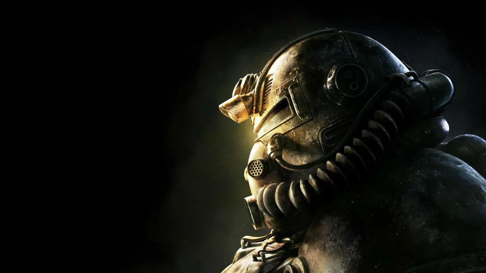

La serie de fallout ya esta disponible en Prime Video
Los juegos de la saga Fallout multiplican su número de jugadores en Steam tras el estreno de la serie de Prime: Fallout 76, Fallout 4, Fallout 3 y New Vegas despegan, que además están baratísimos en Steam. El estreno de la serie de Fallout en Amazon Prime Video no ha estado acompañado de ningún videojuego, pues es una saga que lleva en barbecho desde 2018, tras el lanzamiento de Fallout 76. En realidad, el día que salió la serie, Bethesda anunció una actualización "next gen" para Fallout 4, que añadía otras mejoras en todas las plataformas... para el 25 de abril. Pero los jugadores no han querido esperar, y los juegos de la saga han multiplicado, en algunos casos por cuatro, como podemos ver en esta gráfica, su cifra de jugadores, todo avivado por el interés por la serie.